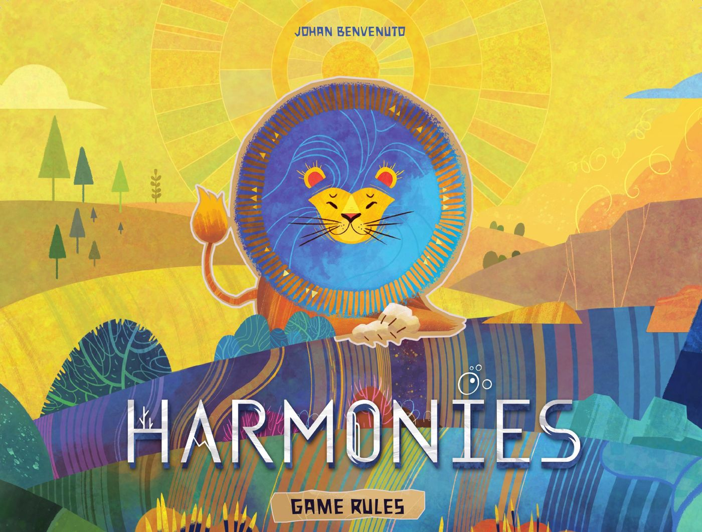
桌游新手入门教学
用彩色板块搭出美丽地形，为动物们打造家园。
2–4 人对战 · 也可单人挑战
01 · 游戏目标
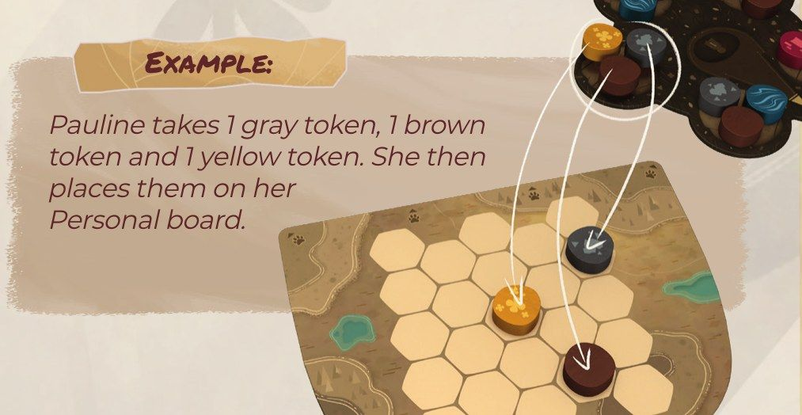
每回合拿 3 个彩色板块，放到自己的版图上，拼出河流、树林、山脉、田野和建筑。
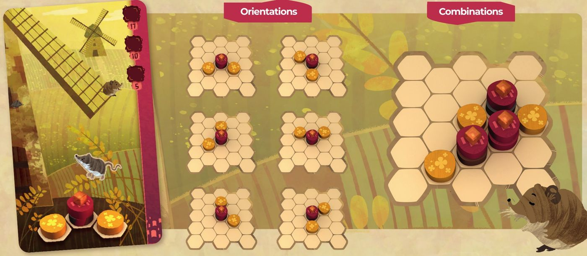
动物卡上画着它想要的地形图案。拼出来，动物就能住进去。
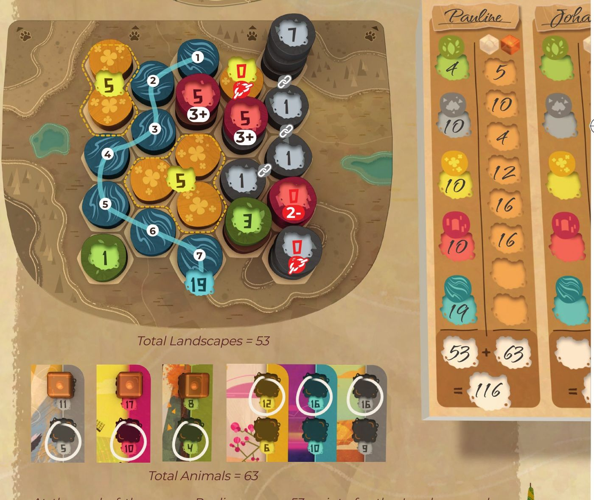
游戏结束时，地形分加动物分，总分最高的玩家获胜。
02 · 配件一览
蓝色 × 23
灰色 × 23
棕色 × 21
绿色 × 19
黄色 × 19
红色 × 15
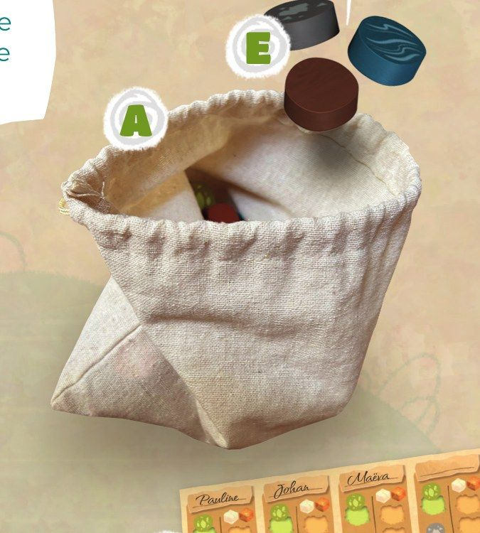
全部放进布袋，每次随机抽取。
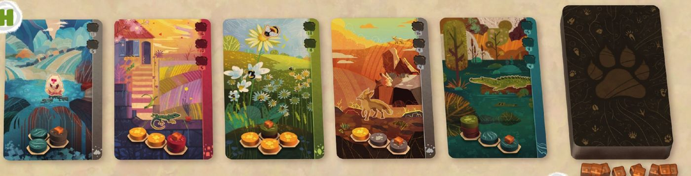
32 张动物卡 + 66 个动物方块
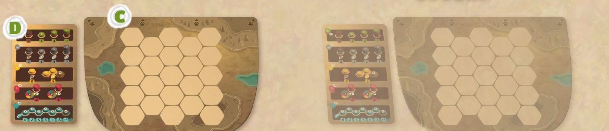
4 块个人版图（A / B 面）+ 4 张提示卡
另有中央版图、计分本，以及进阶用的 10 张自然之灵卡。
03 · 认识地形
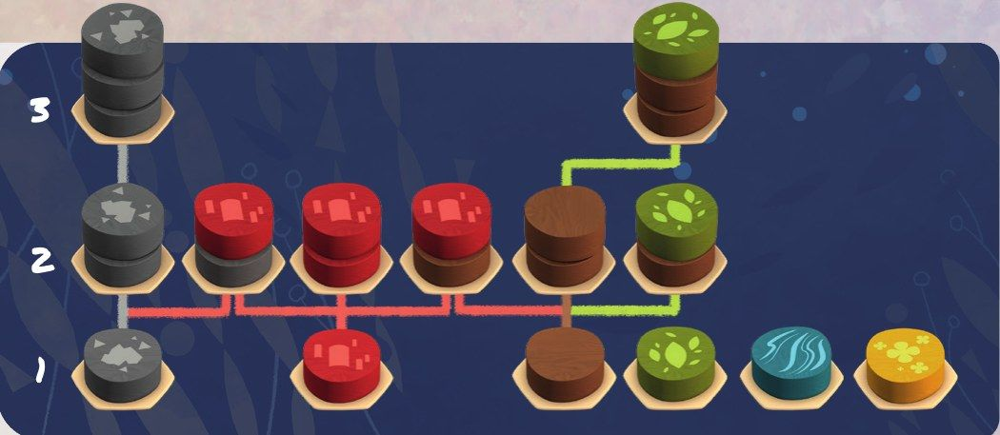
山脉 Mountains · 灰色叠高
建筑 Buildings · 红色在顶
树木 Trees · 绿叶 + 棕树干
水 Water · 蓝色
田野 Fields · 黄色
记住一句话：颜色决定地形，叠起来的高度决定分数。
04 · 游戏准备
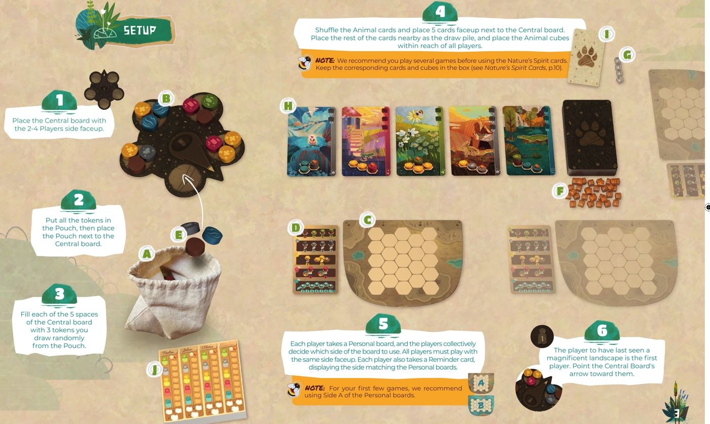
1
中央版图翻到 2–4 人面。
2
所有板块倒进布袋。
3
中央版图 5 个格子各随机放 3 个板块。
4
动物卡洗匀，翻开 5 张，方块放旁边。
5
每人 1 块个人版图，大家同一面，新手用 A 面。
6
最近看过美景的人先手。
05 · 回合流程
从起始玩家开始顺时针轮流。下面三个动作顺序随意，可以穿插着做。
必做 · 每回合 1 次
从中央版图的某一格拿走 3 个板块，全部放到自己的版图上。
可选 · 每回合最多 1 次
从翻开的 5 张里选 1 张，放到自己版图上方。
可选 · 次数不限
地形图案拼好了，就把动物方块放进栖息地。
回合结束：从布袋抽 3 个板块补满中央版图；动物卡不足 5 张时补齐。
06 · 拿取并放置板块
示例：拿走一格的灰、棕、黄 3 个板块，放到自己的版图上。
每放下一个后，都可以先做可选动作，再放下一个。
✓
空格子随时可以放。
✓
可以叠在 1 个或 2 个板块上面，组成树、山或建筑。
✕
不能塞到已有板块的下面。
✕
不能放在已有动物方块的格子上。
07 · 叠放规则
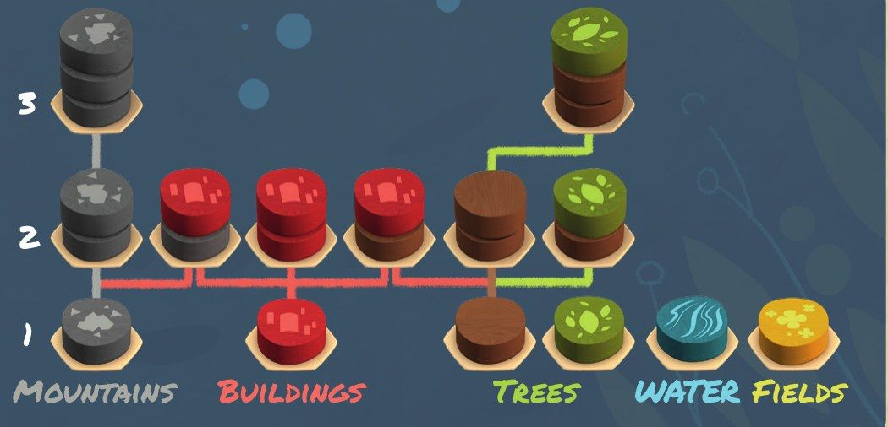
灰色叠 1–3 层。
红色放在 1 层棕 / 灰 / 红上面。
绿色放在 0–2 层棕色上面。
不能叠，只能放在空格上。
08 · 动物卡
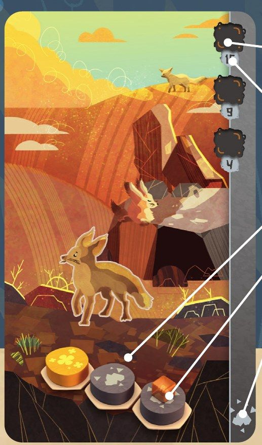
1
右侧方块槽：拿卡时，有几格就放几个动物方块上去。
2
分数：方块每移走一个，就露出更高的分数。
3
栖息地图案：卡片底部，你要在版图上拼出的形状；方块标出动物住在哪一格。
4
侧边色条：提醒动物要放在什么颜色的板块上。
版图上方最多同时放 4 张未完成的动物卡。新手尽量选色条颜色不同的动物。
09 · 放置动物方块
✓
图案可以旋转成任意方向，形状必须一模一样。
✓
树和山的高度必须完全符合卡上所画；建筑底层颜色随意。
✓
同一个板块可以同时属于多个栖息地。
✓
从卡上拿最下面的方块，放进指定格子。
✕
每个格子最多放 1 个动物方块。
左：同一图案的各种朝向都算数。右：板块可以被多个栖息地共用。
放了就不动：动物放下后永久有效，地形之后变化也不用移走。方块全部放完，卡片移到一旁，不再占 4 张的名额。
10 · 游戏结束
回合结束补充中央版图时，布袋里已经没有板块。
某位玩家回合结束时，个人版图只剩 2 个或更少空格。
打完这一轮，让每人回合数相同，然后计分。总分最高者获胜；平分时，放置动物方块多的人胜。
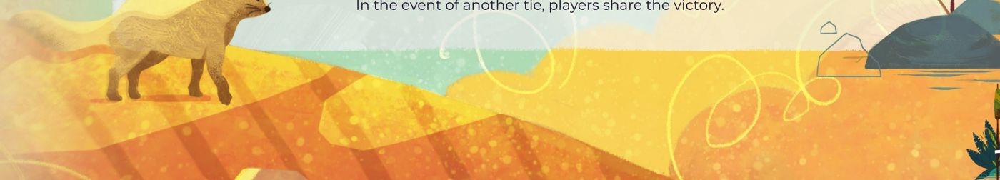
11 · 计分（一）
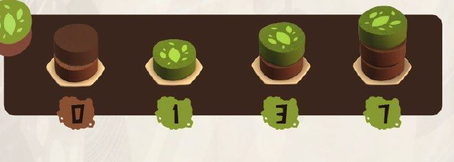
高 1 / 2 / 3 层 = 1 / 3 / 7 分；没有绿叶不算树。
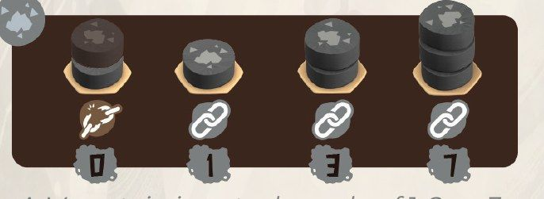
高 1 / 2 / 3 层 = 1 / 3 / 7 分；没挨着别的山 = 0 分。
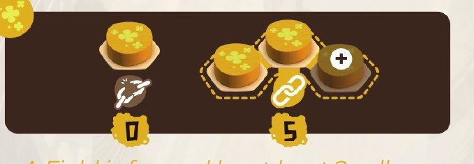
2 个以上黄色相连 = 5 分；连得再多也只算一块。
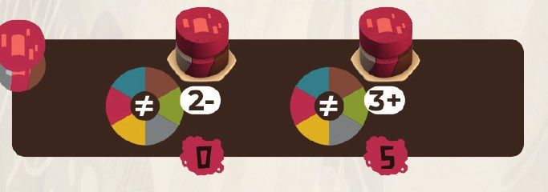
四周顶层有 3 种以上颜色 = 5 分，否则 0 分。
小技巧：田野拆成多块两格的小田，比一大片更划算。
12 · 计分（二）
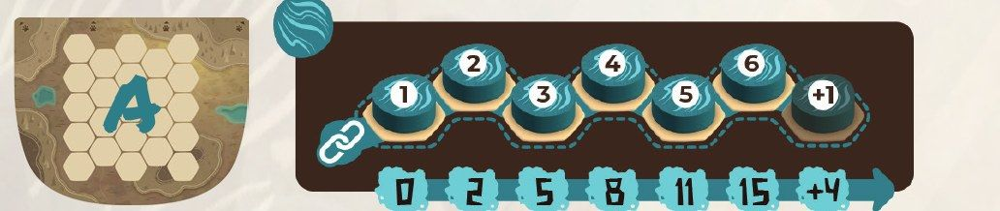
长度 1–6 = 0 / 2 / 5 / 8 / 11 / 15 分，超过 6 格每格 +4。只算最长的一条，按两端之间最短路径数格。
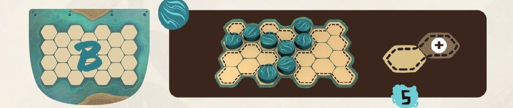
被蓝色板块隔开的每一块区域算一个岛，每岛 5 分。至少总有 1 个岛。
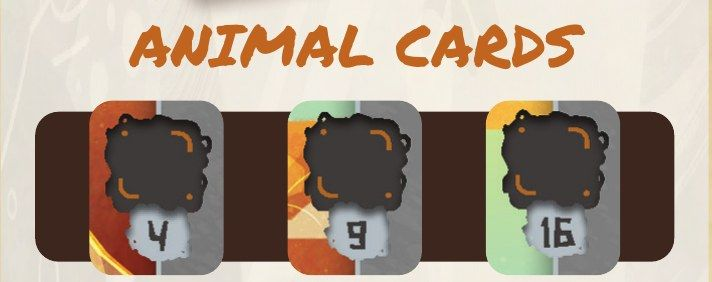
动物卡：不论完成与否，得分 = 最上面那个空出来的格子的分数。一个方块都没放 = 0 分，但没有扣分。
13 · 新手小贴士
1
个人版图先用 A 面，自然之灵卡先不用。
2
同时持有的动物卡，尽量选色条颜色不同的。
3
山要挨着山建；田野拆成两格一块。
4
河流只算最长一条，集中修一条长河。
5
一个板块可以服务多只动物，多利用重叠。
规则书示例：地形 53 分 + 动物 63 分 = 116 分。
14 · 熟练之后
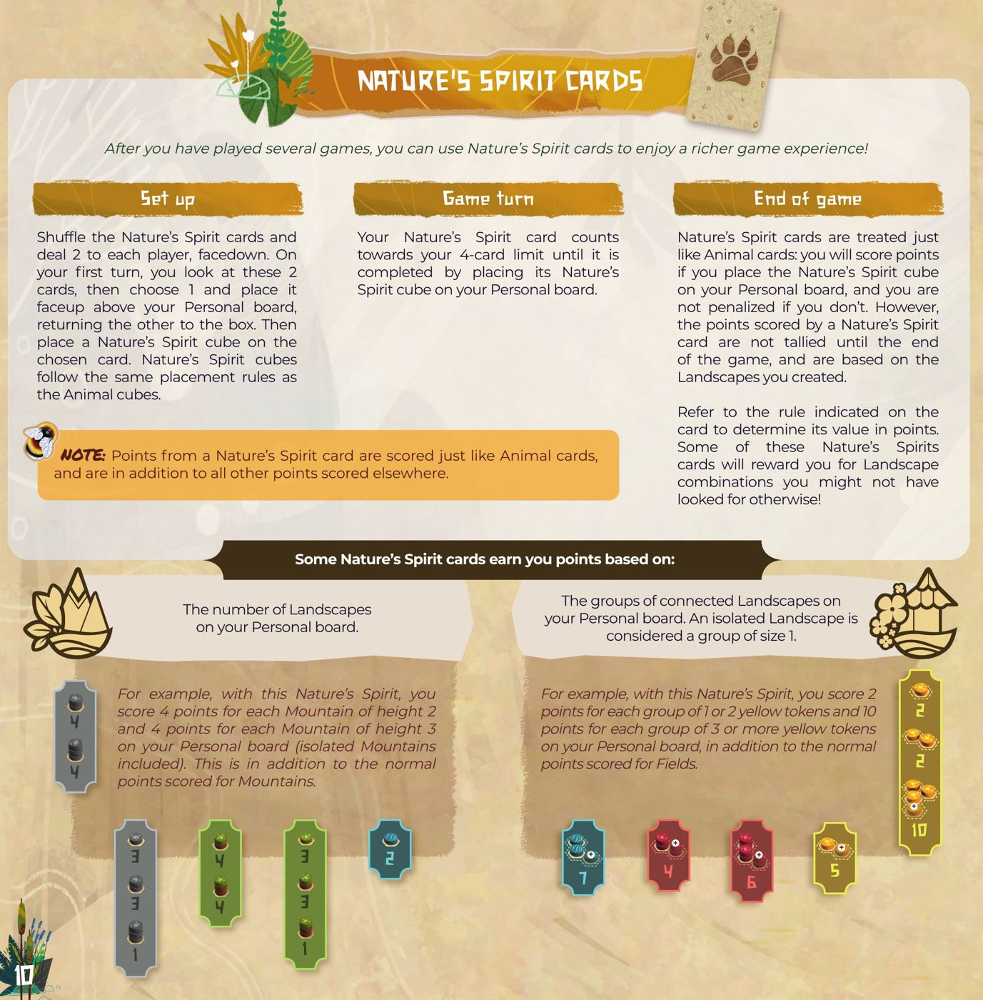
开局每人发 2 张，选 1 张留下。放上它的方块后，终局按卡上规则额外加分。
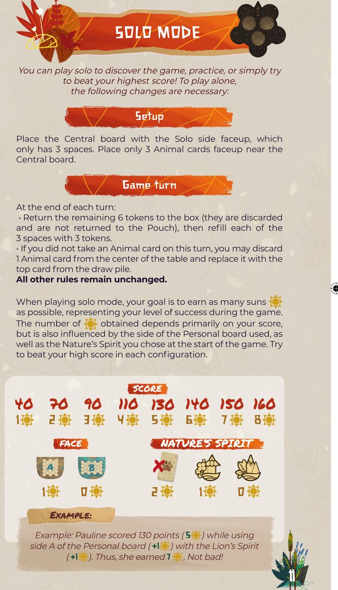
中央版图换单人面，只有 3 格、3 张动物卡。每回合剩下的板块弃掉。按得分换取太阳，挑战自己的纪录。
现在，摆好版图，开始你的第一局吧！